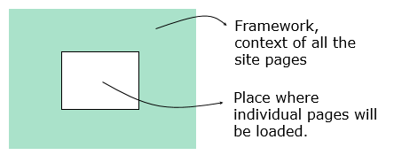
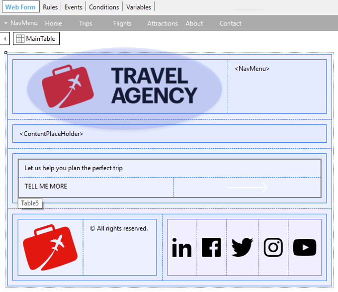

Defines the layout and the behavior common to the referenced Web application UI screens.
In other words, it specifies the framework or context and behavior of the Web application UI screens that reference it.

It is a Web Panel object that has the Type property set to Master Page.
You may define as many Web Master Panel objects as you want in your Knowledge Base.
By default, every Knowledge Base contains some Web Master Panel objects automatically created. One of them is named RwdMasterPage and it is referenced in the Default Master Page property at version level.
You can create a Web Master Panel object through the New Object dialog. There, you have to select the User Interface category, and you are offered to create a Web Master Panel.
Every Web Master Panel must contain a ContentPlaceHolder control (this is the only mandatory control in a Web Master Panel object) to define where on the Web Master Panel UI the content of each Web Panel or Transaction will be placed.
Observe the following Web Master Panel object:

The desired design was analyzed to define which controls to insert and where.
The images were provided by designers, and they were created as images in the KB.
A Responsive Table was inserted (they are the ones used by default) to include the application logo and menu. Also, the Table5 is a responsive table inserted to contain the texts and the white arrow. This table has a class assigned, which has the background color (indicated by designers) configured.
Note that the ContentPaceHolder control was inserted in the desired place. All these definitions and more details are part of a defined Design System.
On a Web Master Panel object, you can also define Rules, Events, Conditions, and any other component of a common web page, with the purpose of adding common behavior. For example, some aspects as security or auditing can be implemented in a Web Master Panel.
A Web Master Panel is defined, specified, and generated independently. So if you want to modify the layout (for example, changing the footer), all you need to do is modify/generate the Web Master Panel and not any object referencing it.
Every Web Panel object and Transaction object contains the Master Page property to set there its Web Master Panel.
By default when you create a Web Panel or Transaction, its Master Page property is set with the Default Master Page property value. This is the reason why all the Web Panels and Transactions you create take the RwdMasterPage Web Master Panel by default and you can see that the whole application maintains the same style, and reuse the same aesthetics, without having worried about achieving this.
Of course, you can modify those properties values by other Web Master Panels created by you.
When executing a Web Panel or Transaction associated with a Web Master Panel, events are triggered in the following sequence:
Event Start of the Web Master Panel
Event Start of the Web Panel
Event Refresh and Load of the Web Master Panel (here, the Web Master Panel is drawn until reaching the Content Placeholder)
Event Refresh and Load of the Web Panel
.......
When programming a Web Master Panel object, you may need information about the contained object. The information is available through properties of the Content Placeholder control. These properties are:
What is a Master Page
Master Page property
Web Theme object
Theme Class
Design System Class